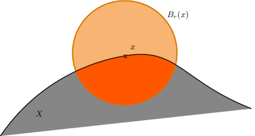
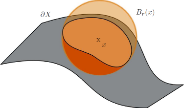
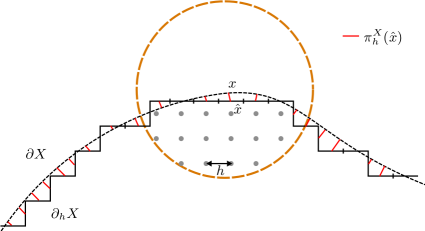
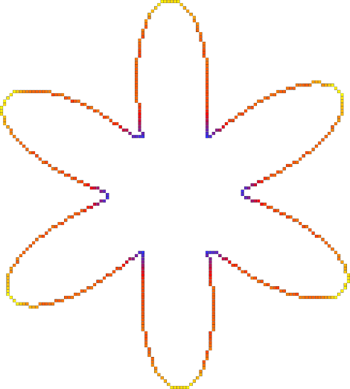
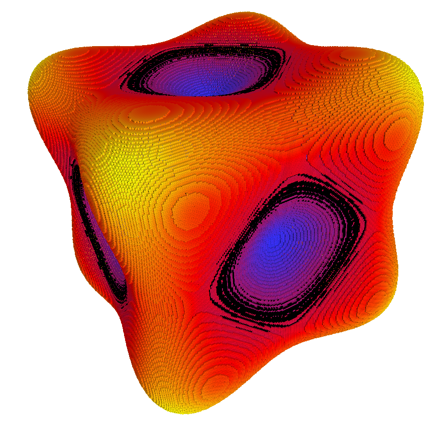
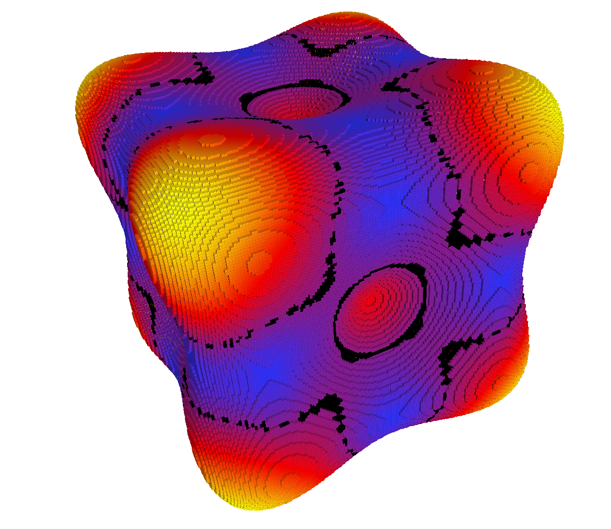
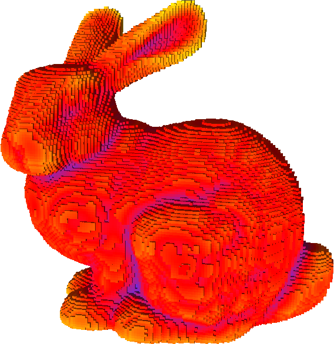
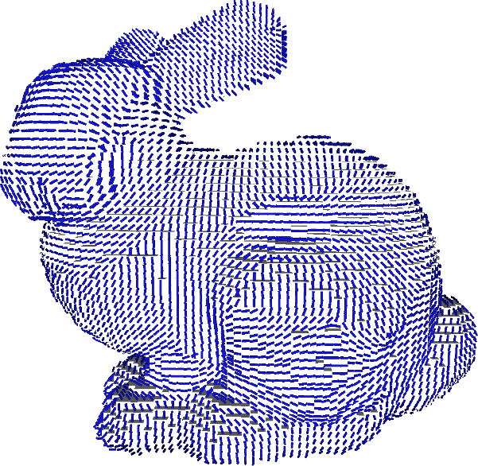
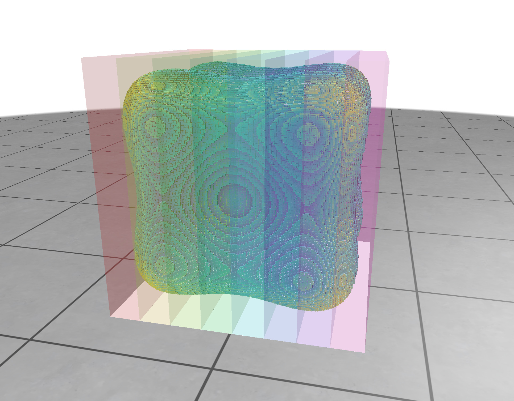

- Generated on for DGtal by
 1.18.0
1.18.0
|
DGtal 2.2.0
|
The algorithm implemented in the class IntegralInvariantVolumeEstimator and IntegralInvariantCovarianceEstimator are detailed in the article [26] .
In geometry processing, interesting mathematical tools have been developed to design differential estimators on smooth surfaces based on Integral Invariant [95] [96] . The principle is simple: we move a convolution kernel along the shape surface and we compute integrals on the intersection between the shape and the convolution kernel, as follow in dimension 3:
\[ V_r(x) = \int_{B_r(x)} \chi(p)dp\ \]
where \( B_r(x) \) is the Euclidean ball of radius \( r \), centered at \( x \) and \( \chi(p) \) the characteristic function of \( X \). In dimension 2, we simply denote \( A_r(x) \) such quantity (represented in orange color on the following figure).



In [25] , we have demonstrated that some digital integral quantities provide curvature information when the kernel size tends to zero for a sufficiently smooth shape. Indeed, at \( x \) of the surface \( X \) and with a fixed radius \( r \), we obtain convergent local curvature estimators \( \tilde{\kappa}_r(X,x) \) and \( \tilde{H}_r(X,x) \) of quantities \( \kappa(X,x) \) and \( H(X,x) \) respectively:
\[ \tilde{\kappa}_r(X,x) = \frac{3\pi}{2r} - \frac{3A_r(x)}{r^3},\quad \tilde{\kappa}_r(X,x) = \kappa(X,x)+ O(r) \]
\[ \tilde{H}_r(X,x) = \frac{8}{3r} - \frac{4V_r(x)}{\pi r^4},\quad \tilde{H}_r(X,x) = H(X,x) + O(r) \]
where \( \kappa_r(X,x) \) is the 2d curvature of \( X \) at \( x \) and \( H_r(X,x) \) is the 3d mean curvature of \( X \) at \( x \).
Then we showed that we can obtain local digital curvature estimators :
\[ \forall 0 < h < r,\quad \hat{\kappa}_r(Z,x,h) = \frac{3\pi}{2r} - \frac{3\widehat{Area}(B_{r/h}(\frac{1}{h} \cdot x ) \cap Z, h)}{r^3} \]
where \( \hat{\kappa}_r \) is an integral digital curvature estimator of a digital shape \( Z \subset ℤ^2 \) at point \( x \in \rm I\! R^2 \) and step \( h \). \( B_{r/h}(\frac{1}{h} \cdot x ) \cap Z, h) \) means the intersection between \( Z \) and a Ball \( B \) of radius \( r \) digitized by \( h \) centered in \( x \).
In the same way, we have in 3d :
\[ \forall 0 < h < r,\quad \hat{H}_r(Z',x,h) = \frac{8}{3r} - \frac{4\widehat{Vol}(B_{r/h}(\frac{1}{h} \cdot x ) \cap Z', h)}{\pi r^4}. \]
where \( \hat{H}_r \) is an integral digital mean curvature estimator of a digital shape \( Z' \subset ℤ^3 \) at point \( x \in \rm I\! R^3 \) and step \( h \) .
We have demonstrated in [25] that to prove the multigrid convergence with a convergence speed of \( O(h^{\frac{1}{3}}) \), the Euclidean radius of the kernel must follow the rule \( r = k_mh^{\alpha_m} \) ( \( \alpha_m = \frac{1}{3} \) provides better worst-case errors, so we will use this value).
Experimental results can be found at https://liris.cnrs.fr/jeremy.levallois/Papers/DGCI2013/ and https://liris.cnrs.fr/jeremy.levallois/Papers/AFIG2013/
The user part is rather simple by using only IntegralInvariantVolumeEstimator or IntegralInvariantCovarianceEstimator.
Since 2d curvature and 3d mean curvature are related to the volume between the shape and a ball centered on the border of the shape, we need to estimate this volume and use this value to get the curvature information. Then we parametrize our volume estimator IntegralInvariantVolumeEstimator by a functor to compute the curvature (in 2d: functors::IICurvatureFunctor and in 3d for the mean curvature: functors::IIMeanCurvature3DFunctor )
In 3d we can also compute the covariance matrix of the intersection between the shape and the ball centered on the border of the shape using IntegralInvariantCovarianceEstimator. This offers us the possibility to extract many differential quantities as: 3d Gaussian curvature, first and second principal curvatures, as well first and second principal curvature directions, normal vector or tangent vector (functors::IIGaussianCurvature3DFunctor, etc. See file DGtal/geometry/surfaces/estimation/IIGeometricFunctors.h or namespace functors for the entire list).
All functors defined in IIGeometricFunctors.h have the same initialization process: you need to use the default constructor, and initialize them with init() method. They will ask for a grid step ( \( h \)) and the Euclidean radius of the kernel ball ( \( r \)).
As described below, this parameter \( r_e \) determines the level of feature detected by the estimator Since IntegralInvariantVolumeEstimator and (resp.) IntegralInvariantCovarianceEstimator are models of CSurfelLocalEstimator, they will follow rules inferred by it (init(), eval(), etc.). But some particular considerations are introduce. The following steps are the general usage of Integral Invariant estimators:
If you want to evaluate on a range of surfels, we recommend you to choose the second way. Indeed, some optimizations are available when the range of surfels is given with a 0-adjacency. Then, when you extract the digital surface of your shape, it's recommended to use a depth-first search (see DepthFirstVisitor for example). If none, no optimization are perform (it will be visible in performances for big shape).
It is important to consider a range of connected surfels when evaluating with Integral Invariant Curvature estimators in order to benefit the kernel optimization. Note that the methodology is the same with both IntegralInvariantVolumeEstimator and IntegralInvariantCovarianceEstimator. The only change is on the typedef of Functor/Estimator (see below):
Here is some results in 2d and 3d :





Each Integral Invariant estimator can run in parallel in DGtal, provided the library is compiled with OpenMP support (DGTAL_WITH_OPENMP option). The interface for computation and parameter setting is the same as for every other integral invariant estimator and can be used as a drop-in replacement in most cases.
The key idea behind the parallel execution is to first split the surface domain into subdomains, and then run convolutions concurrently on each of these smaller domains. The splitter type is still specified in the template parameters, while the configured splitter instance is now passed to the ParallelIIEstimator constructor together with the requested thread count. Currently, DGtal provides RegularDomainSplitter, which splits the outer domain regularly, and AxisDomainSplitter, which splits domains along a specified dimension. See kernel/domains/DomainSplitter.h for more information and the expected interface.
At the low-level API, a typical construction is:
A complete example is detailed in parallelIIShortcuts.cpp using the DGtal Shortcuts (see Shortcuts). For example, using this setting:
Parallel Integral Invariant curvature estimation can be obtained using:
On an Apple M1 (8 cores), the output shows a speed-up up to 8 threads as expected:
For 8 threads with splits along the 0-axis, we obtain:
